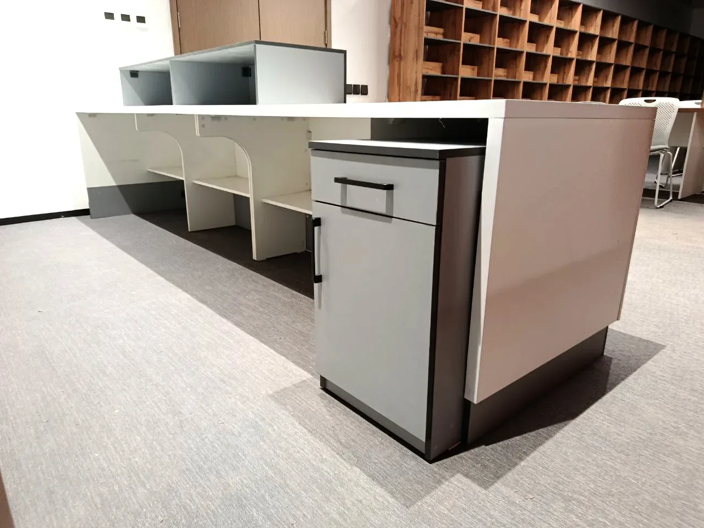
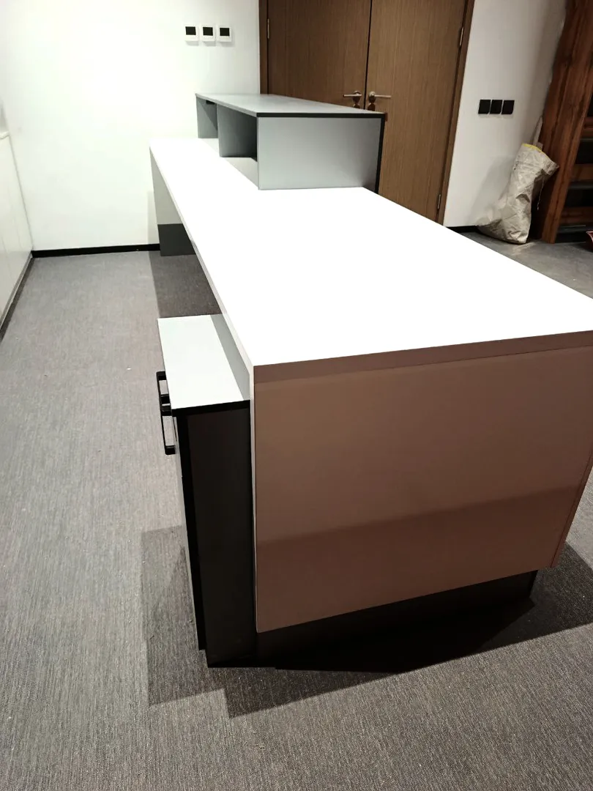

РЕАЛЬНЫЙ ПРОЕКТ · COLOURWAY DESIGN
Мебель для коммерческого интерьера
Индивидуальная мебельная композиция со стойкой и открытыми секциями хранения. Спокойная палитра и простые линии организуют рабочее пространство.
Обсудить похожий проект

